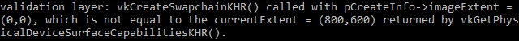

Swap chain
Vulkan does not have the concept of a "default framebuffer," hence it requires an infrastructure that will own the buffers we will render to before we visualize them on the screen. This infrastructure is known as the swap chain and must be created explicitly in Vulkan. The swap chain is essentially a queue of images that are waiting to be presented to the screen. Our application will acquire such an image to draw to it, and then return it to the queue. How exactly the queue works and the conditions for presenting an image from the queue depend on how the swap chain is set up. However, the general purpose of the swap chain is to synchronize the presentation of images with the refresh rate of the screen.
Checking for swap chain support
Not all graphics cards are capable of presenting images directly to a screen for
various reasons, for example, because they are designed for servers and don’t
have any display outputs. Secondly, since image presentation is heavily tied
into the window system and the surfaces associated with windows, it is not
part of the Vulkan core. You have to enable the VK_KHR_swapchain device
extension after querying for its support.
For that purpose we’ll first extend the createLogicalDevice function to
check if this extension is supported. We’ve previously seen how to list the
extensions that are supported by a vk::raii::PhysicalDevice, so doing that should
be fairly straightforward. Note that the Vulkan header file provides a nice
macro vk::KHRSwapchainExtensionName that is defined as
VK_KHR_swapchain. The advantage of using this macro is that the compiler
will catch misspellings.
First declare a list of required device extensions, similar to the list of validation layers to enable.
std::vector<const char*> requiredDeviceExtension = {
vk::KHRSwapchainExtensionName};It should be noted that the availability of a presentation queue, as we checked in the previous chapter, implies that the swap chain extension must be supported. However, the extension does have to be explicitly enabled.
Enabling device extensions
Using a swapchain requires enabling the VK_KHR_swapchain extension first.
Enabling the extension just requires a small change to the logical device
creation structure:
deviceCreateInfo.enabledExtensionCount = requiredDeviceExtension.size();
deviceCreateInfo.ppEnabledExtensionNames = requiredDeviceExtension.data();Alternatively, we can do this at the construction and keep this very succinct:
std::vector requiredDeviceExtension = { vk::KHRSwapchainExtensionName };
float queuePriority = 0.5f;
vk::DeviceQueueCreateInfo deviceQueueCreateInfo{.queueFamilyIndex = queueIndex, .queueCount = 1, .pQueuePriorities = &queuePriority};
vk::DeviceCreateInfo deviceCreateInfo{.pNext = &featureChain.get<vk::PhysicalDeviceFeatures2>(),
.queueCreateInfoCount = 1,
.pQueueCreateInfos = &deviceQueueCreateInfo,
.enabledExtensionCount = static_cast<uint32_t>(requiredDeviceExtension.size()),
.ppEnabledExtensionNames = requiredDeviceExtension.data()};Querying details of swap chain support
Just checking if a swap chain is available is not enough because it may not be compatible with our window surface. Creating a swap chain also involves a lot more settings than instance and device creation, so we need to query for some more details before we’re able to proceed.
There are basically three kinds of properties we need to check:
-
Basic surface capabilities (min/max number of images in swap chain, min/max width and height of images)
-
Surface formats (pixel format, color space)
-
Available presentation modes
This section covers how to query the structs that include this information. The meaning of these structs and exactly which data they contain is discussed in the next section.
Let’s start with the basic surface capabilities. These properties are
straightforward to query and are returned into a single
vk::SurfaceCapabilitiesKHR struct.
auto surfaceCapabilities = physicalDevice.getSurfaceCapabilitiesKHR( *surface );This function takes the specified vk::SurfaceKHR window surface into account
when determining the supported capabilities. All the support querying functions
have that as the first parameter because it is the core component of the swap chain.
The next step is about querying the supported surface formats.
std::vector<vk::SurfaceFormatKHR> availableFormats = physicalDevice.getSurfaceFormatsKHR( surface );Finally, querying the supported presentation modes works exactly the same way
with vk::raii::PhysicalDevice::getSurfacePresentModesKHR:
std::vector<vk::PresentModeKHR> availablePresentModes = physicalDevice.getSurfacePresentModesKHR( surface );All the details are available now. Swap chain support is enough for this tutorial if there is at least one supported image format and one supported presentation mode given the window surface we have. It is important that we only try to query for swap chain support after verifying that the extension is available.
Choosing the right settings for the swap chain
There may still be many different modes of varying optimality in the swap chain. We’ll now write a couple of functions to find the right settings for the best possible swap chain. There are three types of settings to determine:
-
Surface format (color depth)
-
Presentation mode (conditions for "swapping" images to the screen)
-
Swap extent (resolution of images in swapchain)
For each of these settings, we’ll have an ideal value in mind that we’ll go with if it’s available, and otherwise we’ll create some logic to find the next best thing.
Surface format
The function for this setting starts out like this. We’ll later pass the
formats member of the SwapChainSupportDetails struct as argument.
vk::SurfaceFormatKHR chooseSwapSurfaceFormat(std::vector<vk::SurfaceFormatKHR> const &availableFormats)
{
assert(!availableFormats.empty());
return availableFormats[0];
}Each vk::SurfaceFormatKHR entry contains a format and a colorSpace member. The
format member specifies the color channels and types. For example,
vk::Format::eB8G8R8A8Srgb means that we store the B, G, R and alpha channels in
that order with an 8-bit unsigned integer for a total of 32 bits per pixel. The
colorSpace member indicates if the SRGB color space is supported or not using
the vk::ColorSpaceKHR::eSrgbNonlinear flag.
For the color space we’ll use SRGB if it is available, because it results in more accurate perceived colors. It is also pretty much the standard color space for images, like the textures we’ll use later on.
Because of that we should also use an SRGB color format, of which one of the most common ones is vk::Format::eB8G8R8A8Srgb.
Let’s go through the list and see if the preferred combination is available:
const auto formatIt = std::ranges::find_if(
availableFormats,
[](const auto &format) { return format.format == vk::Format::eB8G8R8A8Srgb && format.colorSpace == vk::ColorSpaceKHR::eSrgbNonlinear; });
}If that fails, then we could start ranking the available formats based on how "good" they are, but in most cases it’s okay to just settle with the first format that is specified.
vk::SurfaceFormatKHR chooseSwapSurfaceFormat(const std::vector<vk::SurfaceFormatKHR>& availableFormats) {
const auto formatIt = std::ranges::find_if(
availableFormats,
[](const auto &format) { return format.format == vk::Format::eB8G8R8A8Srgb && format.colorSpace == vk::ColorSpaceKHR::eSrgbNonlinear; });
return formatIt != availableFormats.end() ? *formatIt : availableFormats[0];
}Presentation mode
The presentation mode is arguably the most important setting for the swap chain, because it represents the actual conditions for showing images to the screen. There are four possible modes available in Vulkan:
-
vk::PresentModeKHR::eImmediate: Images submitted by your application are transferred to the screen right away, which may result in tearing. -
vk::PresentModeKHR::eFifo: The swap chain is a queue where the display takes an image from the front of the queue when the display is refreshed, and the program inserts rendered images at the back of the queue. If the queue is full, then the program has to wait. This is most similar to vertical sync as found in modern games. The moment that the display is refreshed is known as "vertical blank". -
vk::PresentModeKHR::eFifoRelaxed: This mode only differs from the previous one if the application is late and the queue was empty at the last vertical blank. Instead of waiting for the next vertical blank, the image is transferred right away when it finally arrives. This may result in visible tearing. -
vk::PresentModeKHR::eMailbox: This is another variation of the second mode. Instead of blocking the application when the queue is full, the images that are already queued are simply replaced with the newer ones. This mode can be used to render frames as fast as possible while still avoiding tearing, resulting in fewer latency issues than standard vertical sync. This is commonly known as "triple buffering," although the existence of three buffers alone does not necessarily mean that the framerate is unlocked.
Only the vk::PresentModeKHR::eFifo mode is guaranteed to be available, so we’ll
again have to write a function that looks for the best mode that is available:
vk::PresentModeKHR chooseSwapPresentMode(std::vector<vk::PresentModeKHR> const &availablePresentModes)
{
return vk::PresentModeKHR::eFifo;
}I think that vk::PresentModeKHR::eMailbox is a very nice trade-off if
energy usage is not a concern. It allows us to avoid tearing while still
maintaining fairly low latency by rendering new images that are as
up to date as possible right until the vertical blank. On mobile devices,
where energy usage is more important, you will probably want to use
vk::PresentModeKHR::eFifo instead. Now, let’s look through the list to see
if vk::PresentModeKHR::eMailbox is available:
vk::PresentModeKHR chooseSwapPresentMode(std::vector<vk::PresentModeKHR> const &availablePresentModes)
{
assert(std::ranges::any_of(availablePresentModes, [](auto presentMode) { return presentMode == vk::PresentModeKHR::eFifo; }));
return std::ranges::any_of(availablePresentModes,
[](const vk::PresentModeKHR value) { return vk::PresentModeKHR::eMailbox == value; }) ?
vk::PresentModeKHR::eMailbox :
vk::PresentModeKHR::eFifo;
}Swap extent
That leaves only one major property, for which we’ll add one last function:
vk::Extent2D chooseSwapExtent(vk::SurfaceCapabilitiesKHR const &capabilities)
{}The swap extent is the resolution of the swap chain images, and it’s almost
always exactly equal to the resolution of the window that we’re drawing to in
pixels (more on that in a moment). The range of the possible resolutions is
defined in the vk::SurfaceCapabilitiesKHR structure. Vulkan tells us to match
the resolution of the window by setting the width and height in the
currentExtent member. However, some window managers do allow us to differ here,
and this is indicated by setting the width and height in currentExtent to a
special value: the maximum value of uint32_t. In that case we’ll pick the
resolution that best matches the window within the minImageExtent and
maxImageExtent bounds. But we must specify the resolution in the correct unit.
GLFW uses two units when measuring sizes: pixels and
screen coordinates.
For example, the resolution {WIDTH, HEIGHT} that we specified earlier when
creating the window is measured in screen coordinates. But Vulkan works with
pixels, so the swap chain extent must be specified in pixels as well.
Unfortunately, if you are using a high DPI display (like Apple’s Retina
display), screen coordinates don’t correspond to pixels. Instead, due to the
higher pixel density, the resolution of the window in pixel will be larger than
the resolution in screen coordinates. So if Vulkan doesn’t fix the swap extent
for us, we can’t just use the original {WIDTH, HEIGHT}. Instead, we must use
glfwGetFramebufferSize to query the resolution of the window in pixel before
matching it against the minimum and maximum image extent.
#include <cstdint> // Necessary for uint32_t
#include <limits> // Necessary for std::numeric_limits
#include <algorithm> // Necessary for std::clamp
...
vk::Extent2D chooseSwapExtent(vk::SurfaceCapabilitiesKHR const &capabilities)
{
if (capabilities.currentExtent.width != std::numeric_limits<uint32_t>::max())
{
return capabilities.currentExtent;
}
int width, height;
glfwGetFramebufferSize(window, &width, &height);
return {
std::clamp<uint32_t>(width, capabilities.minImageExtent.width, capabilities.maxImageExtent.width),
std::clamp<uint32_t>(height, capabilities.minImageExtent.height, capabilities.maxImageExtent.height)
};
}The clamp function is used here to bound the values of width and
height between the allowed minimum and maximum extents that are supported
by the implementation.
Creating the swap chain
Now that we have all of these helper functions helping us with the choices we have to make at runtime, we finally have all the information necessary to create a working swap chain.
Create a createSwapChain function that starts out with the results of these
calls and make sure to call it from initVulkan after logical device creation.
void initVulkan() {
createInstance();
setupDebugMessenger();
createSurface();
pickPhysicalDevice();
createLogicalDevice();
createSwapChain();
}
void createSwapChain() {
vk::SurfaceCapabilitiesKHR surfaceCapabilities = physicalDevice.getSurfaceCapabilitiesKHR( *surface );
swapChainExtent = chooseSwapExtent(surfaceCapabilities);
uint32_t minImageCount = chooseSwapMinImageCount(surfaceCapabilities);
std::vector<vk::SurfaceFormatKHR> availableFormats = physicalDevice.getSurfaceFormatsKHR(*surface);
swapChainSurfaceFormat = chooseSwapSurfaceFormat(availableFormats);
}Aside from these properties, we also have to decide how many images we would like to have in the swap chain. The implementation specifies the minimum number that it requires to function:
uint32_t imageCount = surfaceCapabilities.minImageCount;However, simply sticking to this minimum means that we may sometimes have to wait on the driver to complete internal operations before we can acquire another image to render to. Therefore, it is recommended to request at least one more image than the minimum:
uint32_t imageCount = surfaceCapabilities.minImageCount + 1;We should also make sure to not exceed the maximum number of images while
doing this, where 0 is a special value that means that there is no maximum,
resulting in this helper function
uint32_t chooseSwapMinImageCount(vk::SurfaceCapabilitiesKHR const &surfaceCapabilities)
{
auto minImageCount = std::max(3u, surfaceCapabilities.minImageCount);
if ((0 < surfaceCapabilities.maxImageCount) && (surfaceCapabilities.maxImageCount < minImageCount))
{
minImageCount = surfaceCapabilities.maxImageCount;
}
return minImageCount;
}As is tradition with Vulkan objects, creating the swap chain object requires filling in a large structure, to be fair, the swapchain is a fairly complex object so it is among the larger createInfo structures in Vulkan:
vk::SwapchainCreateInfoKHR swapChainCreateInfo{.surface = *surface,
.minImageCount = minImageCount,
.imageFormat = swapChainSurfaceFormat.format,
.imageColorSpace = swapChainSurfaceFormat.colorSpace,
.imageExtent = swapChainExtent,
.imageArrayLayers = 1,
.imageUsage = vk::ImageUsageFlagBits::eColorAttachment,
.imageSharingMode = vk::SharingMode::eExclusive,
.preTransform = surfaceCapabilities.currentTransform,
.compositeAlpha = vk::CompositeAlphaFlagBitsKHR::eOpaque,
.presentMode = chooseSwapPresentMode(availablePresentModes),
.clipped = true};
}; .imageArrayLayers = 1,The imageArrayLayers specifies the number of layers each image consists of.
This is always 1 unless you are developing a stereoscopic 3D application.
.imageUsage = vk::ImageUsageFlagBits::eColorAttachment,The imageUsage bit field specifies what kind of operations we’ll use the images in
the swap chain for. In this tutorial, we’re going to render directly to them,
which means that they’re used as color attachment. It is also possible that
you’ll render images to a separate image first to perform operations like
post-processing. In that case you may use a value like
vk::ImageUsageFlagBits::eTransferDst instead and use a memory operation to transfer
the rendered image to a swap chain image.
.imageSharingMode = vk::SharingMode::eExclusive,The imageSharingMode specifies how to handle swap chain images that might be used
across multiple queue families. There are two ways to handle images that are accessed
from multiple queues:
-
vk::SharingMode::eExclusive: An image is owned by one queue family at a time, and ownership must be explicitly transferred before using it in another queue family. This option offers the best performance. -
vk::SharingMode::eConcurrent: Images can be used across multiple queue families without explicit ownership transfers.
If the queue families differ, then you could use the concurrent mode to avoid having
to do the ownership chapters, because these involve some concepts that are better
explained at a later time. Concurrent mode requires you to specify in advance between
which queue families ownership will be shared using the queueFamilyIndexCount and
pQueueFamilyIndices parameters. Concurrent mode requires you to specify at least two
distinct queue families. If the graphics queue family and presentation queue family are
the same, which will be the case on most hardware, then we should stick to exclusive mode.
.preTransform = surfaceCapabilities.currentTransform,We can specify that a certain transform should be applied to images in the swap
chain if it is supported (supportedTransforms in capabilities), like a
90-degree clockwise rotation or horizontal flip. To specify that you do not want
any transformation, simply specify the current transformation.
.compositeAlpha = vk::CompositeAlphaFlagBitsKHR::eOpaque,The compositeAlpha field specifies if the alpha channel should be used for
blending with other windows in the window system. You’ll almost always want to
simply ignore the alpha channel, hence vk::CompositeAlphaFlagBitsKHR::eOpaque.
.presentMode = chooseSwapPresentMode(availablePresentModes),
.clipped = true};The presentMode member speaks for itself. If the clipped member is set to
vk::True then that means that we don’t care about the color of pixels that are
obscured, for example, because another window is in front of them. Unless you
really need to be able to read these pixels back and get predictable results,
you’ll get the best performance by enabling clipping.
swapChainCreateInfo.oldSwapchain = nullptr;That leaves one last field, oldSwapChain. With Vulkan, it’s possible that
your swap chain becomes invalid or unoptimized while your application is
running, for example, because the window was resized. In that case, the swap chain
actually needs to be recreated from scratch, and a reference to the old one must
be specified in this field. This is a complex topic that we’ll learn more about
in a future chapter.
For now, we’ll assume that we’ll only ever create one swap chain and can leave this
member to its default nullptr.
Now add class members to store the vk::SwapchainKHR object and its images:
vk::raii::SwapchainKHR swapChain;
std::vector<vk::Image> swapChainImages;Creating the swap chain is now as simple as calling the constructor of vk::raii::SwapchainKHR:
swapChain = vk::raii::SwapchainKHR( device, swapChainCreateInfo );
swapChainImages = swapChain.getImages();The parameters are the logical device and a swap chain creation info.
Now run the application to ensure that the swap chain is created
successfully! If at this point you get an access violation error in
vkCreateSwapchainKHR or see a message like Failed to find
'vkGetInstanceProcAddress' in layer SteamOverlayVulkanLayer.dll, then see
the FAQ entry about the Steam overlay layer.
Try removing the swapChainCreateInfo.imageExtent = extent; line with validation layers
enabled. You’ll see that one of the validation layers immediately catches the
mistake and a helpful message is printed:

Retrieving the swap chain images
The swap chain has been created now, so all that remains is retrieving the
handles of the vk::Image objects it contains. We’ll reference these during rendering
operations in later chapters.
std::vector<vk::Image> swapChainImages = swapChain->getImages();One last thing, store the format and extent we’ve chosen for the swap chain images in member variables. We’ll need them in future chapters.
vk::raii::SwapchainKHR swapChain = nullptr;
std::vector<vk::Image> swapChainImages;
vk::SurfaceFormatKHR swapChainSurfaceFormat;
vk::Extent2D swapChainExtent;We now have a set of images that can be drawn onto and can be presented to the window. The next chapter will begin to cover how we can set up the images as render targets, and then we start looking into the actual graphics pipeline and drawing commands!